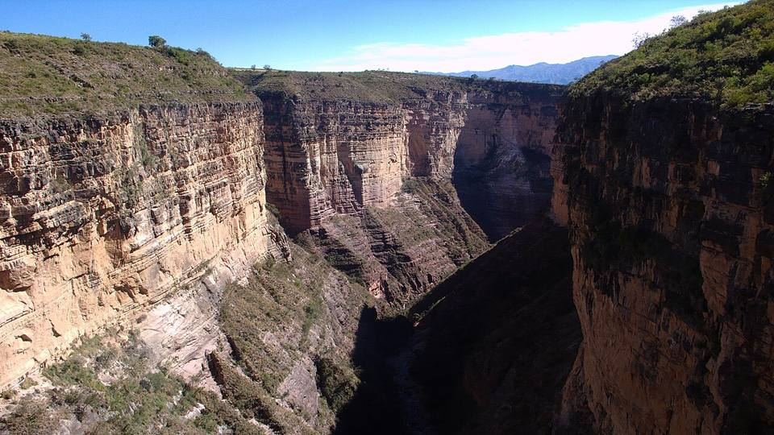
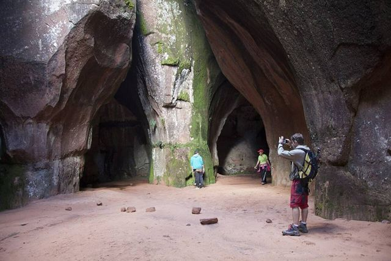
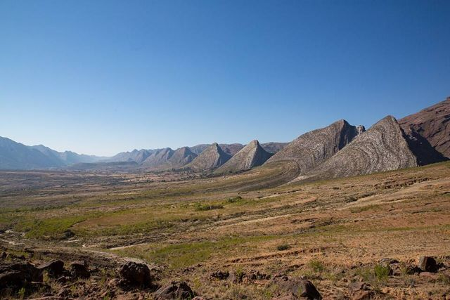
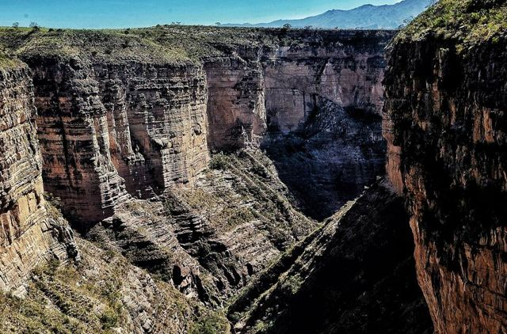
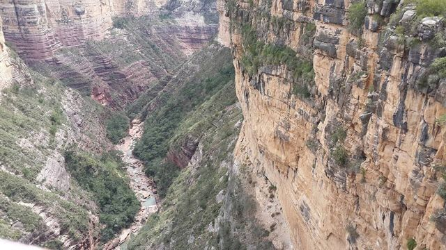
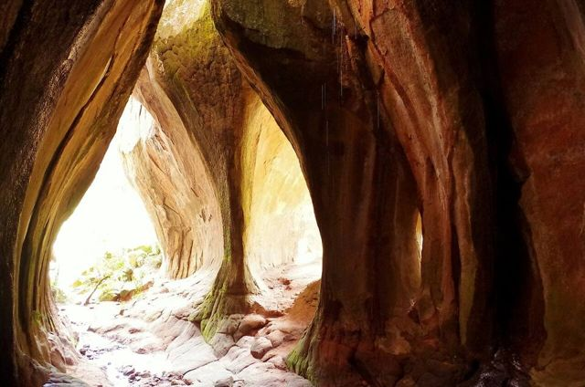
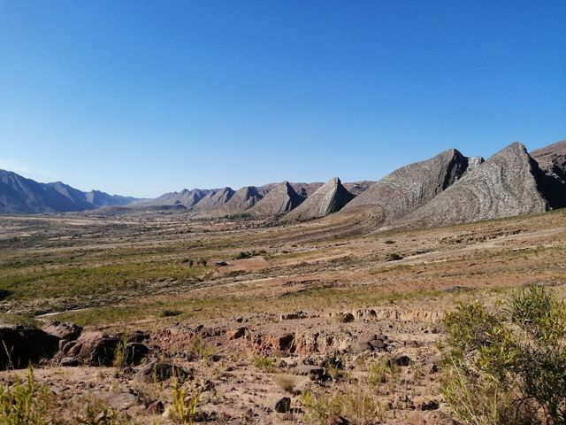

Parque Nacional Torotoro
Departamento de Potosí · Naturaleza y caminatas

Torotoro es un pueblito al final de un camino de montaña, en un paisaje que parece de la época de los dinosaurios… y con razón: cientos de huellas gigantes siguen marcadas en la roca. Se baja al fondo de un cañón de 300 m hasta una cascada y se gatea por una verdadera caverna con un río subterráneo y peces ciegos. Una de las aventuras más espectaculares del país, a pocas horas de Cochabamba.
2720 maltura
2 a 3 díaspara quedarse
Qué hacer
- Cañón de Torotoro y cascada El Vergel
- Caverna de Umajalanta (espeleología fácil, río subterráneo)
- Huellas de dinosaurio gigantes alrededor del pueblo
- Ciudad de Itas (formaciones rocosas)
Qué comer
- Picante mixtoPlato con varias carnes (pollo, lengua, res) en salsa de ají, con chuño y arroz. Para los que aman el picante.
- SilpanchoCarne de res apanada y bien delgada sobre arroz y papas, con huevo frito y una ensalada de tomate y cebolla. EL plato de Cochabamba.
- Sopa de maníSopa cremosa de maní con fideos y papas fritas encima. Reconfortante y muy boliviana.
Consejo. Guía obligatorio en el parque (se contrata en el pueblo). Cuenta dos noches.
Cómo llegar a Torotoro
Cochabamba Carretera (bus, auto) · 4 a 5 h
Minibuses diarios desde el sur de Cochabamba (zona Av. República), temprano en la mañana. O en auto o excursión.
Confirma los horarios el día anterior: no salen cada hora.
Fotos de Parque Nacional Torotoro












Otros lugares de la región
 CochabambaLa «ciudad de la eterna primavera» y capital gastronómica del país.
CochabambaLa «ciudad de la eterna primavera» y capital gastronómica del país. Laguna AlalayUna gran laguna en el corazón de Cochabamba, refugio de aves al pie de los cerros.
Laguna AlalayUna gran laguna en el corazón de Cochabamba, refugio de aves al pie de los cerros. Pairumani y Villa AlbinaLa villa del barón del estaño Simón Patiño, sus jardines, y el inicio de un sendero al Tunari.
Pairumani y Villa AlbinaLa villa del barón del estaño Simón Patiño, sus jardines, y el inicio de un sendero al Tunari. Parque Nacional TunariLas montañas justo encima de la ciudad: lagunas de altura y la cumbre del Tunari (5035 m).
Parque Nacional TunariLas montañas justo encima de la ciudad: lagunas de altura y la cumbre del Tunari (5035 m).- Apote y sus cascadas gemelasUn valle de montaña encima de Tiquipaya, con dos cascadas lado a lado y senderos hacia el Tunari.
 YungapampaUn refugio sobre un mar de nubes, en la cara norte del Tunari, tierra del oso andino.
YungapampaUn refugio sobre un mar de nubes, en la cara norte del Tunari, tierra del oso andino. Laguna CoraniUn gran lago de represa entre bosques de pinos y montañas, conocido por su trucha.
Laguna CoraniUn gran lago de represa entre bosques de pinos y montañas, conocido por su trucha. IncachacaUn bosque de nubes al borde del Chapare, con un puente inca, cascadas y una vieja planta eléctrica.
IncachacaUn bosque de nubes al borde del Chapare, con un puente inca, cascadas y una vieja planta eléctrica. Valle Alto: Tarata y ClizaPueblos coloniales del valle, mercados y chicha.
Valle Alto: Tarata y ClizaPueblos coloniales del valle, mercados y chicha. Quillacollo e Inca RakayRuinas incas encima de Sipe Sipe, y Quillacollo, ciudad de la Urkupiña.
Quillacollo e Inca RakayRuinas incas encima de Sipe Sipe, y Quillacollo, ciudad de la Urkupiña. IncallajtaEl sitio inca más grande de Bolivia, en un valle aislado.
IncallajtaEl sitio inca más grande de Bolivia, en un valle aislado. TotoraPueblito colonial muy bien conservado en la carretera antigua a Santa Cruz.
TotoraPueblito colonial muy bien conservado en la carretera antigua a Santa Cruz. AiquileLa capital nacional del charango, a medio camino entre Cochabamba y Sucre.
AiquileLa capital nacional del charango, a medio camino entre Cochabamba y Sucre. MizquePueblo colonial de un valle cálido, tierra de la paraba frente roja.
MizquePueblo colonial de un valle cálido, tierra de la paraba frente roja.